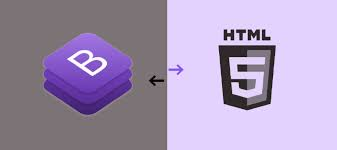
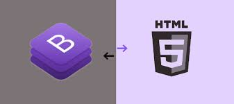

Ruchitra Kumaresan
Front-End Developer | UX/UI Designer | Software Developer

Take a closer look at the milestones and experiences that have shaped my career path, detailed below üìñ
About Me üë©ü誂Äçüíº
I am Ruchitra Kumaresan, a dedicated front-end developer with a Master's in Computer Science from New York Institute of Technology (NYIT) and a Bachelor's in Computer Science from REVA University, India. I specialize in front-end development, with technical expertise in JavaScript, React.js, HTML5, CSS, and software testing. Throughout my academic and professional career, I have successfully delivered robust applications and systems, demonstrating my ability to tackle complex challenges and provide high-quality solutions.
Besides my technical skills, I am well-versed in software development methodologies and have experience working in agile environments. My internships at Lernov and Sain Solutions in Bangalore, India, provided me with hands-on experience in front-end web development. I contributed to projects that improved user interaction and functionality. Furthermore, my coursework and projects, such as product recommendation systems and utilizing Recurrent Neural Networks (RNNs) for trading, have honed my analytical and problem-solving abilities.
I am eager to explore new opportunities to apply my skills and creativity to drive impactful software development and tech industry projects. Let’s connect and discuss how we can collaborate to make a significant difference in this ever-evolving field.
Experience üë©‚Äçüíª
-
Website Developer
Lernov, Bangalore, India
(July 2021 to August 2021)Employed Sublime Text to systematically organize and optimize HTML code, actively contributing to the website's layout. Attained significant success in project advancement, developing a fully functional website closely aligned with 90% of detailed client specifications. Building user interfaces that are elegant and encourage exploration. Developed practical expertise in front-end development using Sublime Text-3, achieving proficiency levels of 50% to 60% in crafting template designs. Acquired a versatile skill set encompassing JavaScript, CSS, React.js, PHP, WordPress, and HTML, and utilizing tools like Bootstrap and Font Awesome. The cultivation of solid communication abilities complemented these skills.
Skills:


-
Frontend Web Developer
Sain Solutions, Bangalore, India
(February 2020 to May 2020)Successfully designed aesthetically pleasing interfaces with advanced functionality, enhanced teamwork, and problem-solving skills. Implemented new user interfaces for a retail client, leading to a 20% improvement in user engagement within two months of deployment. Augmented coding abilities through acquiring advanced techniques, staying at the forefront of web development practices, and gaining hands-on experience, including PHP. Demonstrated expertise in diverse design methodologies, achieving 70-80% project completion rates and staying current with advanced coding techniques, fostering effective teamwork and collaborative problem-solving.
Skills:
 


-
9/11 Memorial & Museum
Retail Greeter Volunteer, New York
(January 2025 - Present)I welcome 1000+ guests monthly by providing guidance on resources and assisting with navigation and accessibility. Engaging visitors in thoughtful discussions, sharing the historical significance of exhibits, and preserving personal stories help foster deeper connections. Given the emotional nature of the museum, maintaining a respectful atmosphere, supporting visitors, and encouraging reflection are essential.
-
Computer Science Tutor
UPchive, Brooklyn, New York
(September 2024 to Present)Provided guidance and academic support to students in College Applications and Essay Writing for admission purposes. Assisted students in Computer Science courses to enhance their understanding and skills. Collaborated with students to develop personalized strategies for academic success.
Education üë©‚Äçüéì
New York Institute of Technology
New York, USA.
Master's in Computer Science
Sept 2022 - May 2024
Coursework :- Software Engineering, Programmimg Language(Javascript), Artificial Intelligence.
REVA University
Bangalore, India.
Bachelor's in Computer Science
Aug 2016 - May 2020
Coursework :- Web Development, Software Engineering, Artificial Intelligence, Programming Language(Python).
Personal Projects üë©‚Äçüíª
MoodTunes - Mood-Based Playlist Generator
MoodTunes is an interactive web app that curates personalized playlists based on a user’s mood. By simply describing how they feel, the app analyzes their input using basic NLP and suggests songs matching emotions like happy, sad, calm, or nostalgic, with direct YouTube links for instant playback. Built with HTML, CSS, and JavaScript, MoodTunes features:
- Responsive UI for seamless cross-device compatibility.
- Local storage for saving user preferences.
- Dynamic playlist generation for a personalized experience.
This project deepened my understanding of event handling, conditional rendering, and music-emotion mapping in web development.
Skills: JavaScript, Natural Language Processing (NLP), Responsive Design
üåê Explore ProjectGiftGenie - Personalized Gift Suggestion Platform
GiftGenie is an interactive web application designed to help users find the perfect gift for any occasion or recipient. The platform offers two main features:
- Occasion-Based Gift Suggestions: Users select an occasion, specify the recipient's age and relationship, and receive tailored gift ideas.
- Gift Personality Quiz: A fun and engaging quiz that determines the recipient's personality type based on their preferences and suggests personalized gifts.
Skills: Responsive Design, JavaScript, Media Queries, Dynamic Content Rendering
üåê Explore ProjectAcademic Projects üë©‚Äçüíª

1.Computer Graphics
Advanced Rendering Techniques: I focus heavily on Advanced Rendering Techniques, especially Projective Texturing. This technique enables high-fidelity simulations of real-world elements like shadows, reflections, and decals. Projective Texturing enhances realism by adding details like shadows and reflections, significantly elevating visual quality and immersing users in the experience.
Vertex and Fragment Shaders: To achieve real-time rendering and interactivity, I leverage Vertex and Fragment Shaders. Vertex shaders modify 3D model geometry, while fragment shaders handle pixel-level rendering. This approach allows me to apply effects like reflections, dynamic lighting, and textures, enhancing realism through precise control over light and materials.
GPU Optimization and Performance Enhancement: I focus on optimizing performance by using GPU capabilities for intensive computations. By offloading tasks like lighting and reflections to the GPU, my applications run smoother and more efficiently, making the experience visually impressive and responsive.
Customizing Materials and Textures: My expertise extends to customizing materials and textures for specific visual effects. Adjusting shader parameters, I can simulate materials ranging from rough concrete to reflective surfaces. Techniques like specularity, diffusivity, and bump mapping help create authentic textures, even when viewed up close.
Skills:-


2. Product Recommendation System
An academic project on collaborative filtering and rank-based recommendation systems. It includes: -Similarity-Based Collaborative Filtering: Calculates user similarity using cosine scores based on product interactions, recommending products liked by similar users but not yet interacted with by the target user. Provides top 10 personalized recommendations. -Rank-Based Approach: Ranks products by average rating, filtering out those with low interaction counts, and recommends the top 5 popular items to engage new customers. - Model-Based Collaborative Filtering:Compresses the user-product interaction matrix using SVD with 50 latent features, predicts ratings for each user, and provides the top 5 personalized product recommendations based on predictions.
Product Recommendation-ReportSkills:-


3.RNN for Trading: Multivariate Time Series and Text Data
A research project on using Recurrent Neural Networks (RNNs) for predicting stock market trends. The primary objective is to explore trading strategies using AI technologies such as Deep Learning and RNNs. The project involved an in-depth analysis of factors like the Dropout ratio and Hidden Neurons, achieving an accuracy range of 70% to 90% with time series datasets. Technologies used include Google Colab for coding, RNN for modeling sequential data, and TensorFlow for machine learning models.
Project Presentation ReportSkills:-

4.Lotto Bot
LottoBot is a Discord game bot designed for hosting raffles and Powerball-style lottery games. It uses Python, SQLite, and the Hikari Discord REST API wrapper. LottoBot employs agile methodologies and features in-game currency, customizable options for additional features, and various games within Discord servers.
Final ReportSkills:-

5.Water Quality Monitoring And Filter System To Conserve Water Resources Using IoT
We aim to revolutionize environmental sustainability in water bodies affected by industrial waste through IoT technology. By deploying connected sensors and devices, we can collect real-time data on water quality, temperature, and other critical parameters. This data allows us to promptly detect and respond to pollution incidents, reducing their ecological impact. Our primary objective is to use IoT technologies to continuously assess water quality in various aquatic ecosystems such as lakes, ponds, and rivers. This innovative water management system transmits data to the AWS cloud, enabling real-time monitoring of water quality and purification processes. Once the water reaches a 90% purity level, it becomes safe for various purposes, including consumption and industrial use. This approach ensures responsible utilization of water resources, minimizes waste and contamination, and actively contributes to environmental preservation by safeguarding the precious resource of clean water.
Skills:-


6.Clustering Of Cancerous Profiles Using Machine Learning
Accurate staging is crucial for determining appropriate treatment modalities and prognostic assessments. Machine learning algorithms automatically detect and highlight disparities, inaccuracies, or contradictions within diagnostic reports, ensuring reliable information delivery to medical professionals. Advanced analytics and machine learning methodologies will provide valuable insights and predictive capabilities, facilitating accurate diagnosis and treatment planning for individuals with hematologic cancers.
Final ReportSkills:-
Achievements üåü
-
Published Research Paper
Conference: International Conference on Advances in Computing and Information Technology (IACIT-2020)
Organized by: School of Computing & Information Technology, REVA University, Bangalore, India
Contribution: Conducted research and presented findings on innovative computing techniques, contributing to the advancement of the field.
View Publication -
Career Development & Placement Strategies
Role: Engaged with the Career & Placement Center at REVA University
Contribution: Collaborated with the placement team to develop effective strategies for securing positions in top-tier companies. Gained insights into hiring panel expectations and candidate evaluation processes.
-
Youth Empowerment Volunteer
Organization: YuWaah (Generation Unlimited India)
Role: Volunteer
Contribution: Contributed to empowering youth through initiatives focused on skill development, education, and holistic growth. Gained valuable insights into youth challenges and the impact of youth-focused programs.
Certifications üîñ
Learn UI UX Design Adobe XD : Learn User Experience Design
Issued by: Udemy
Date: April 2025
View CredentialCareer Essentials in Generative AI by Microsoft and LinkedIn
Issued by: Microsoft & Linkedin
Date: March 2025
View CredentialTestimonials üí¨
I had the pleasure of studying with Ruchitra at Reva University. During this time, she consistently demonstrated exceptional dedication and academic excellence. She is not only highly intelligent but also incredibly supportive and always willing to lend a hand to classmates. She brings a positive attitude and a strong work ethic to everything she does. I am confident that she will excel in any professional setting and would be an asset to any team. I highly recommend her for any opportunity that comes her way.
Payal. P. Jain, AEM Former Developer
Morgan Stantly
Bangalore, India.
Skills üìö
HTML
CSS
JavaScript
React
Responsive Web Design
User Research & Analysis
Version Control
Front-End Development
Cross-Browser Compatibility
User Experience (UX) Design
Resume üìÑ
Want to dive into my experience? Click on the link to download my CV.